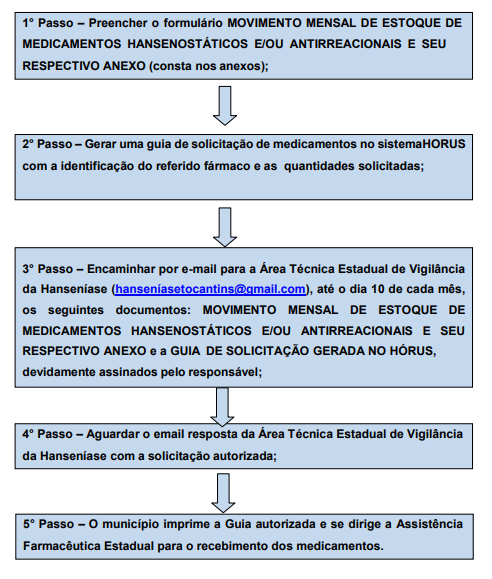
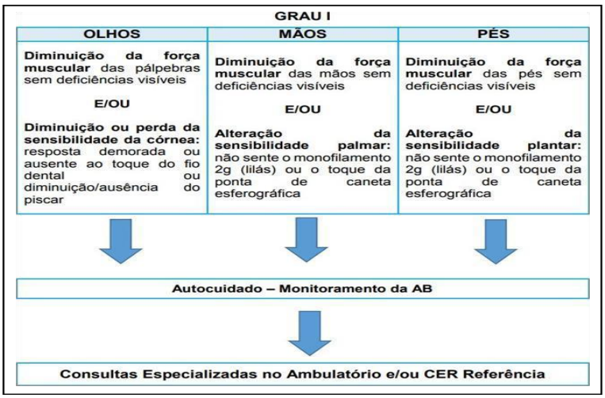
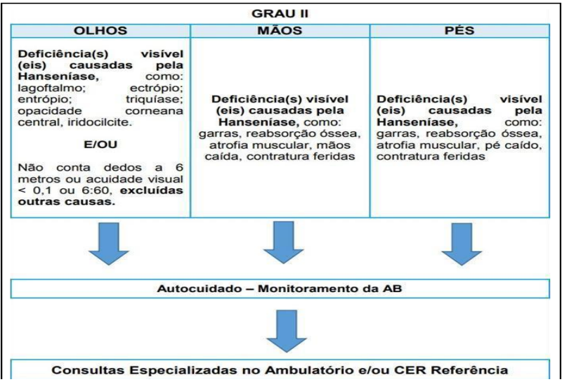

São as Redes de Atenção à Saúde (RAS) ações voltadas para a busca ativa para detecção precoce dos casos; tratamento oportuno; prevenção e tratamento das incapacidades; reabilitação; manejo das reações hansênicas e dos eventos pós-alta; investigação dos contatos de forma a interromper a cadeia de transmissão e formação de grupos de autocuidado voltadas para atender pessoas com hanseníase no Estado do Tocantins.
A Hanseníase é uma doença infecciosa de evolução crônica, de notificação compulsória em todo território nacional, de investigação obrigatória, com comportamento insidioso, podendo promover incapacidades funcionais permanentes, gerando exclusão, estigma e preconceito. Está presente de forma importante em contextos sociais e geográficos que têm em comum o clima tropical, a exclusão social, a escassa oferta de serviços de saúde bem como a fragilidade no enfrentamento da doença na atenção primária à saúde. A Hanseníase tem cura e seu tratamento é totalmente gratuito e ofertado pelo Sistema Único de Saúde (SUS).
Figura 01: Promoção da Saúde
Figura 02: Atenção Primária
Figura 03: Atenção Primária
 Figura 04: Atenção Primária
Figura 05: Atenção Hospitalar
Figura 06: Reabilitação
PERFIL DOS PACIENTES: Pacientes de difícil diagnóstico; pacientes como difícil manejo/efeitos intoliráveis das medicações e/ou pacientes com sequelas.
Macrocetro Sul - Referência Alta Complexidade: HGP.
Como solicitar: via SISREG através secretaria do município;
Nomenclatura: CONSULTA EM DERMATOLOGIA TROPICAL: casos de você diagnóstico, você manejo e casos de sequelas.
Macrocetro Norte - Referência Alta Complexidade: HDT Como solicitar: via SISREG através secretaria do município; Nomenclatura a solicitar: CONSULTA EM DERMATOLOGIA TROPICAL: casos de difícil diagnóstico, difícil manejo e casos de sequelas. .
OBS: Para que pacientes tenham acesso à consulta, é importante a descrição do quadro clínico, com informações sobre as características das lesões, tempo de surgimento, antecedentes e se há história de contactantes. Para melhor avaliação do ato regulatório.
Figura 07: Regulação